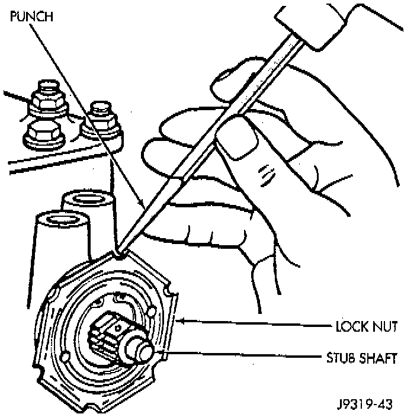
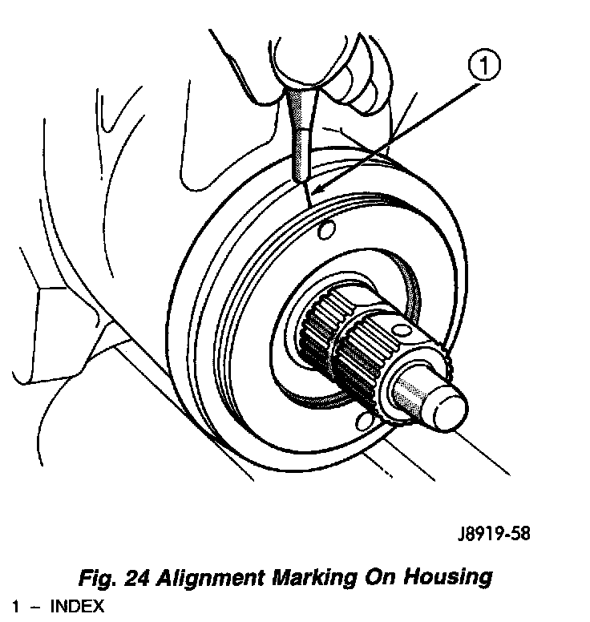
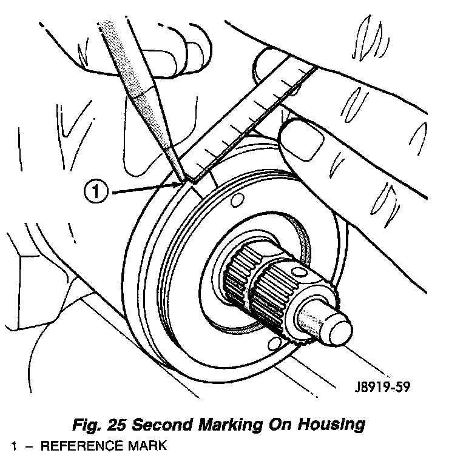
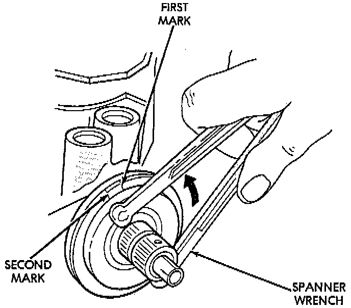
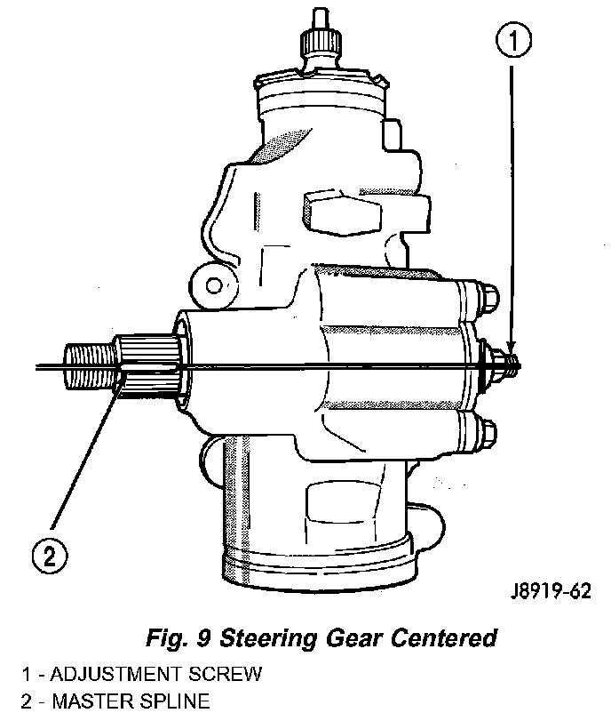
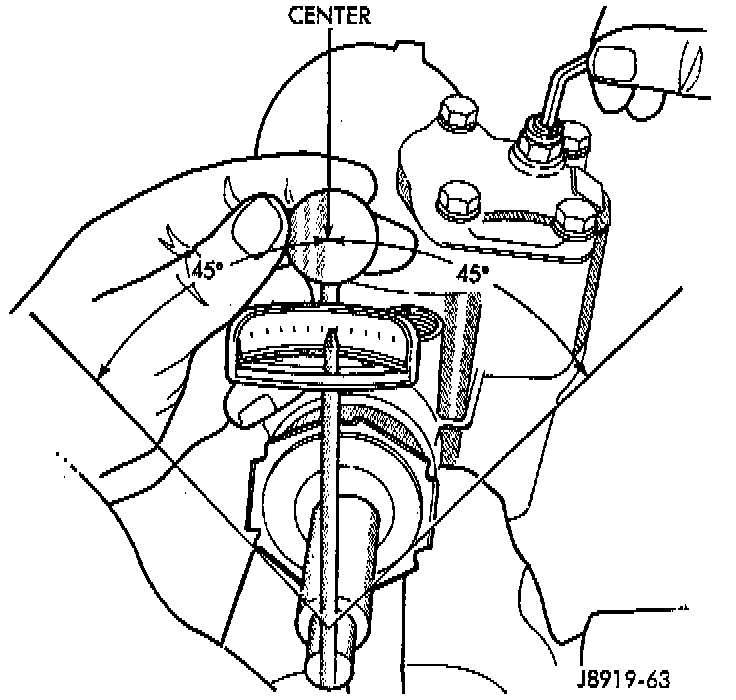

Steering Gear: Adjustments
CAUTION: Steering gear must be adjusted in the proper order. If adjustments are not performed in order, gear damage and improper steering response may result.NOTE: Adjusting the steering gear in the vehicle is not recommended. Remove gear from the vehicle and drain the fluid. Then mount gear in a vise to perform adjustments.

WORM THRUST BEARING PRELOAD
1. Remove adjuster plug locknut.
2. Turn the adjuster in with Spanner Wrench C-4381, or equivalent. Tighten the plug and thrust bearing in the housing until firmly bottomed in housing.
Fig. 24:

3. Place an index mark on the housing even with one of the holes in adjuster plug.
Fig. 25:

4. Measure back (counterclockwise) 13 mm (0.50 inch) and mark housing.

5. Rotate adjustment cap back (counterclockwise) with spanner wrench until hole is aligned with the second mark.
6. Install and tighten locknut to 108 Nm (80 ft. lbs.). Be sure adjustment cap does not turn while tightening the locknut.
OVER-CENTER
1. Rotate the stub shaft from stop to stop and count the number of turns.

2. Starting at either stop turn the stub shaft back 1/2 the total number of turns. This is the center of the gear travel.
3. Turn the pitman shaft adjuster screw back (COUNTERCLOCKWISE until extended, then turn back in (CLOCKWISE) one full turn.

4. Place the torque wrench in the vertical position on the stub shaft. Rotate the wrench 45 degrees each side of the center and record the highest rotational torque on center.
5. Turn the adjuster in until torque to turn stub shaft is 0.6 to 1.2 Nm (6.0 to 10.0 inch lbs.) more than previous reading recorded.
6. Prevent the adjuster screw from turning while tightening adjuster lock nut. Tighten the adjuster lock nut to 27 Nm (20 ft. lbs.).